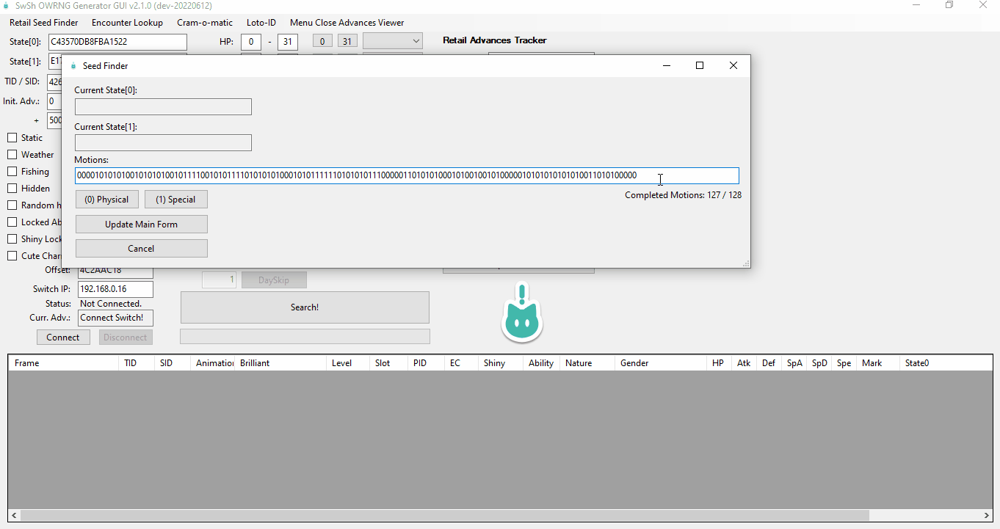
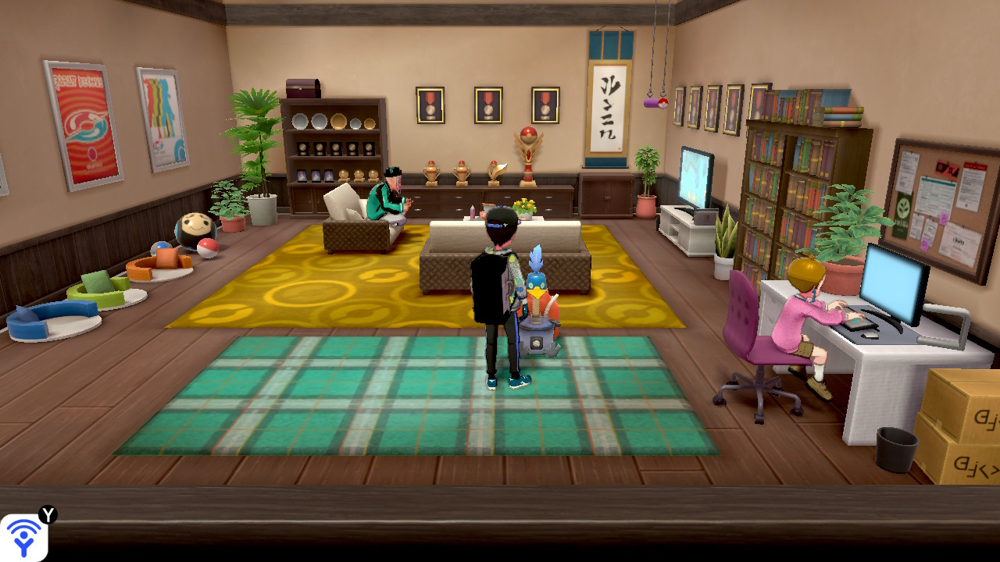
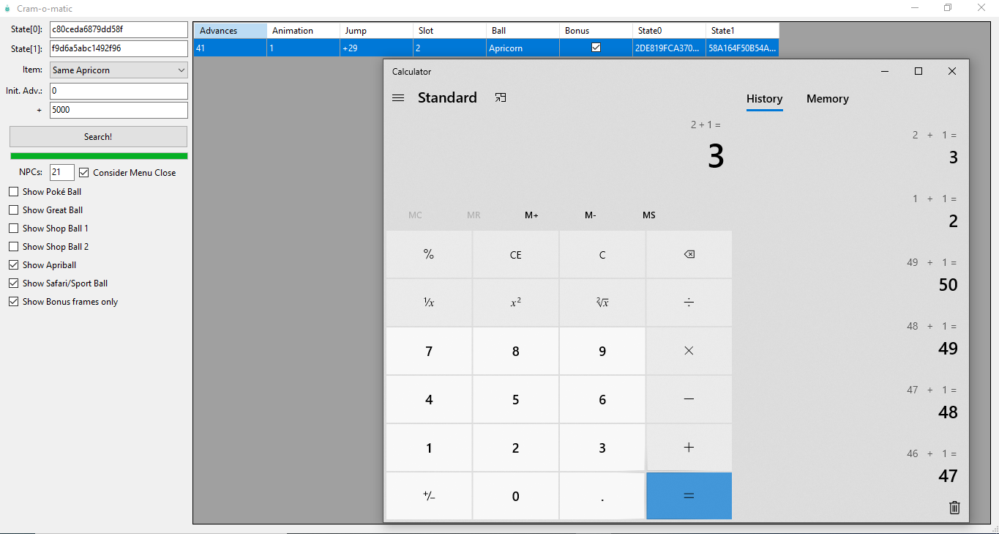
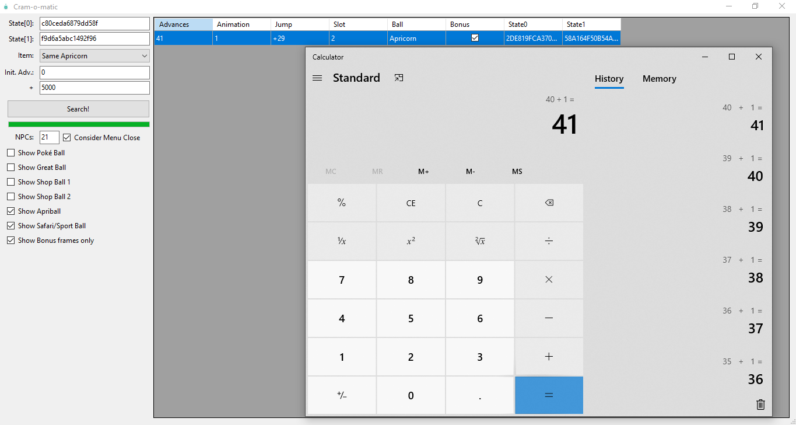

This portion of the guide will cover the process of RNG abusing the Cram-o-matic and the PC lottery function in Sword/Shield using the SWSH Overworld RNG Generator by LegoFigure11.
Item RNG abuse is best utilized to help players obtain rare/valuable items such as rare Pokeballs!
This guide assumes you are using a vanilla Switch console running official stock firmware.
Download and extract all the contents from the SWSH_OWRNG_Generator_GUI.zip into an empty folder and run the .exe file.
In-game setup:
Have the Rotom PC lottery function & Cram-o-matic available for use.
If you plan to RNG abuse the Cram-o-matic, have at least 4 apricorns to use in the machine.
Stand next to the machine you want to work on.
Advancing the RNG state:
Multiple in-game actions can be used to advance the RNG state with varying influence, the methods used in this guide include:
Player movement - Each time the player stops moving the control stick the RNG state will advance a small amount - Roughly 1-3 advancements & a spammable action.
Menu close - Opening and closing the pause menu will advance the RNG state a small amount depending on your location and amount of NPCs present. - Predictable advancements & a spammable action.
Animations - You can make your Pokémon animate on the party summary screen by pressing in the left stick. - 1 advancment per "click" & a spammable action.
Active NPCs - Standing near an NPC will "activate" them, this will advance the RNG state rapidly. - Area specific advancements, good for covering large amounts of advancements quickly.
What are motions/animations?
The term "motions" or "animations" refers to a feature of the Pokémon summary page, when pressing L3 (Clicking in the left stick) your Pokémon will do one of two animations, physical or special. Recording these in sequence will eventually produce our current RNG state.
Figure 0 - Animation differences
In the first animation Espeon swipes towards the screen, this is a clear physical animation.
In the second animation Espeon stays in place using a psychic move, this is a clear special animation.
Step-by-step instructions for identifying your current seeds:
Open the game and enter the overworld.
Pause the game using X, click "Pokémon", then view the summary of any of your Pokémon.
Open the Seed Finder tab of the GUI and have your Pokémon animate.
Click (or type) 0 if your animation was physical.
Click (or type) 1 if your animation was special.
Repeat this process 128 times and your seed will be generated. Click Update Main Form and exit back to the main window.
This can seem like a lengthy and tedious process at first glance (it kinda is), for this reason it's advised to remap your controller button layout if you are able to do so, such as remapping L3 to Y. This is done through the Switch system settings.
Once you know your seed you can easily re-identify your current state within 10-20 animations, this is done using the Retail Advances Tracker feature on the main window of the generator.
Menu Close Prediction:
We can accurately predict the number of advancements that will pass when we close the pause menu. It is based on the number of NPCs in the area and if you were holding a direction on the control stick at the time of unpause. For Loto-ID and Cram-o-matic, the NPC Counts are likely as follows:
If you do not get the correct results, or are attempting to RNG something outside of the above areas, you will need to Calculate your NPC Count.
This can be done using the Menu Close Advances Viewer as follows:
Count the number of NPCs in the area you're in manually. This can also include Pokemon and models outside of render distance so may not be completely accurate, this simply provides a good starting point.
Get into position and press "X" to open the menu.
Identify your current seed in the Retail Seed Finder tab by using animations. (Click Update Main Form after seed identification!)
Click the Menu Close Advances Viewer button at the top of the generator to open a smaller window. Your seeds should be visible in the correct fields.
Take the number of NPCs you counted earlier and put it into the NPCs field.
Enter your number of advancements into the Init Adv. field, as seen on the main window of the generator.
Enter the search range (a few hundred should be enough!) into the + field directly below and search, you should then close and reopen the menu to make sure the predicted advances match what you actually get.
If the values do not match, tweak the number in the NPCs field (decrease the value if the number of advances you got was lower than expected, increase if it was higher) until it matches. Now do a few more menu advances then re-identify your current seed to make sure you stay on track with the generated "timeline".
Closing the pause menu has an added effect of freezing noise in the area for a short time period, we will use this window of silence in tandem with menu close prediction to near guarantee that we interact with the machine on the correct frame.
Menu close prediction is not a requirement to perform retail item RNG abuse, this is the recommended method to use as it allows you to precisely advance all the way up to your target using animations instead of relying on frame clusters or luck. This comes with the side effect of potentially finding fewer results but provides a lot more consistency.
With all the required reading out of the way, let's get into it!
Cram-o-matic RNG abuse
Time to get to work!
The goal is to interact with the Cram-o-matic on the calculated target frame given to us by the Cram-o-matic tab of the generator. We will be using the advancement methods listed at the top of the page and using menu close prediction to hit the target frame.
In this example we will be aiming for a 5 Rare Pokeballs. You can be more specific with the filters if you wish, such as filtering for a specific rare items.
First, stand near the Cram-o-matic and pause the game, then begin recording animations to identify your current seed.
Figure 1 - Tool setup:

Figure 2 - Game setup

Awesome, everything looks good! We can see our current seeds on the Cram-o-matic tab and have our filters set properly, it's time to search for a target frame.
If your results are not desirable, repeat the following:
Restart your game and enter the overworld.
Enter the pause or Home menu and re-identify your current seed using animations.
Search again, do this until you have desirable results.
When using the Consider menu close feature, the output results are of the frame that you need to close the menu on, NOT the frame that you need to start the interaction on.
After closing the pause menu on the correct target frame you should be able to quickly interact with the Cram-o-matic machine to claim your reward.
Figure 3 - Target found!

We found a target frame! 5 Rare Pokeballs on advance x. This will be the frame we close the pause menu and interact with the Cram-o-matic.
Here's a more fleshed out example...
The target is x advances away, delay is 0, and there are 21 NPCs in the building, we are in the pause menu after identifying the current seeds and the Cram-o-matic window is open.
Advance the RNG state by activating a nearby NPC or Date Skipping.
Once you are a within a few hundred frames of the target, run over to the Cram-o-matic machine. You can re-identify your current seed at any point if you lose track.
From this point, only advance by using menu close prediction and summary animations.
After re-identifying your current seed open the Cram-o-matic window and search for your target again.
Use animations to advance to the target frame as displayed by the Cram-o-matic window. (Use a calculator to keep track of inputs if needed.)
Close the pause menu then quickly interact with the Cram-o-matic machine by pressing "A".
If you believe you interacted with the Cram-o-matic on the correct frame, feed it 4 apricorns and take your reward! Make sure the reward matches the output of the generator.
Figure 4/5 - Result Found!

The result matches the output of the generator, mission accomplished! We got 5 Rare Balls from the Cram-o-matic on our first attempt!
That's all there is to RNG abusing the Cram-o-matic on retail hardware!
Rotom Lottery RNG abuse
Time to get to work!
The goal is to interact with the Rotom PC in any Pokecenter on the calculated target frame given to us by the Loto-ID tab of the generator. We will be using the advancement methods listed at the top of the page and using menu close prediction to hit the target frame.
In this example we will be aiming for a Master Ball. You can be more specific with the filters if you wish, such as filtering for a specific rare item.
First, stand near the Rotom PC and pause the game, then begin recording animations to identify your current seed.
Figure 1 - Tool setup:
Figure 2 - Game setup
Awesome, everything looks good! We can see our current seeds on the tab and have our filters set properly, it's time to search for a target frame.
If your results are not desirable, repeat the following:
Restart your game and enter the overworld.
Enter the pause or Home menu and re-identify your current seed using animations.
Search again, do this until you have desirable results.
When using the Consider menu close feature, the output results are of the frame that you need to close the menu on, NOT the frame that you need to start the interaction on.
After closing the pause menu on the correct target frame you should be able to quickly interact with the PC to claim your reward.
Once the Loto-ID tab is filled in correctly you can begin looking for target frames by clicking the search button.
Figure 3 - Target found!
We found a target frame! A Master Ball on advance x. This will be the frame we close the pause menu and interact with the Rotom PC in the Pokecenter.
Here's a more fleshed out example...
The target is x advances away, delay is 0, and there are 7 NPCs in the building, we are in the pause menu after identifying the current seeds and the Loto-ID window is open.
Advance the RNG state by activating a nearby NPC or Date Skipping.
Once you are within a few hundred frames of the target, stand close to the PC. You can re-identify your current seed at any point if you lose track.
From this point, only advance by using menu close prediction and summary animations.
After re-identifying your current seed open the Loto-ID window and search for your target again.
Use animations to advance to the target frame as displayed by the Loto-ID window. (Use a calculator to keep track of inputs if needed.)
Close the pause menu then quickly interact with the Rotom PC by pressing "A".
If you believe you interacted with the Rotom PC on the correct frame, click the "Try Loto ID" option and claim your reward! Make sure the reward matches the output of the generator.
Figure 4/5 - Result Found!
The result matches the output of the generator, mission accomplished!
That's all there is to RNG abusing the the PC lottery function on retail hardware!